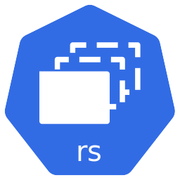

13. Kubernetes (k8s) cơ bản
/
Deployment: update & rollback
Giới thiệu
Deployment là một đối tượng API cung cấp cơ chế cập nhật và quản lý trạng thái cho các version của ứng dụng.
Deployment kiểm soát và cập nhật các Pod để đảm bảo trạng thái thực tế luôn khớp với trạng thái mong muốn mà bạn khai báo.
Ngoài việc đảm bảo số lượng Pod như ReplicaSet, Deployment còn hỗ trợ phương pháp triển khai và quản lý version, cho phép rollback về version trước đó khi có sự cố.
Đặc điểm chính
- Bọc bên ngoài ReplicaSet: Deployment tạo và quản lý ReplicaSet, ReplicaSet quản lý Pod.
- Update không downtime: với chiến lược RollingUpdate, Pod mới được tạo dần, Pod cũ bị thay dần.
- Rollback dễ dàng: mỗi lần update tạo một revision; dùng
kubectl rollout undo để quay lại version cũ.
- Scale: chỉnh số bản sao bằng cách sửa
replicas hoặc kubectl scale.
Mô hình kiến trúc
flowchart TB
D["Deployment
nginx-deployment"]
RS1["

ReplicaSet (v1)
nginx:1.17.9"]
RS2["
ReplicaSet (v2)
nginx:1.17.10"]
D -->|"quản lý"| RS1
D -->|"quản lý (khi update)"| RS2
RS1 --> P1["

Pod"]:::old
RS2 --> P2["
Pod"]:::new
classDef old fill:#e2e8f0,stroke:#64748b,stroke-width:1px
classDef new fill:#eef2ff,stroke:#8f0c9e,stroke-width:1px
Khi RollingUpdate, Kubernetes tạo một ReplicaSet mới và dịch chuyển dần Pod từ bản cũ sang bản mới, giữ cho ứng dụng luôn sẵn sàng. Bản cũ được giữ lại để rollback.
Các chiến lược triển khai
| Chiến lược | Cách hoạt động | Downtime |
|---|
| Recreate | Xoá toàn bộ Pod cũ rồi tạo Pod mới | Có downtime ngắn |
| RollingUpdate (mặc định) | Thay từng Pod cũ bằng Pod mới theo batch | Không downtime |
Hai tham số điều khiển quá trình RollingUpdate:
maxSurge: số Pod tối đa có thể tạo vượt quá số mong muốn trong lúc update (giá trị tuyệt đối hoặc %). Mặc định 25%. Không thể bằng 0 nếu maxUnavailable bằng 0.maxUnavailable: số Pod tối đa có thể không sẵn sàng trong lúc update. Mặc định 25%. Không thể bằng 0 nếu maxSurge bằng 0.
Các lệnh thường dùng
# Tạo
kubectl create -f deployment-file.yaml
# Xem
kubectl get deployments
# Cập nhật
kubectl apply -f deployment-file.yaml
kubectl set image deployment/my-deployment nginx=nginx:v1.2.3
kubectl edit deployment my-deployment --record
# Trạng thái rollout
kubectl rollout status deployment/my-deployment
kubectl rollout history deployment/my-deployment
# Rollback
kubectl rollout undo deployment/my-deployment
Thực hành: Deployment – update & rollback
Tạo Deployment nginx với chiến lược RollingUpdate, cập nhật version image và quan sát quá trình rollout, sau đó scale số lượng Pod và rollback về version cũ.
flowchart LR
D["Deployment
nginx-deployment"]
RS1["
ReplicaSet v1
nginx:1.17.9"]
RS2["
ReplicaSet v2
nginx:1.17.10"]
D --> RS1
D --> RS2
RS1 -.->|"rollback"| D
Ban đầu Deployment chạy ReplicaSet v1 (nginx:1.17.9). Khi cập nhật image lên 1.17.10, Kubernetes tạo ReplicaSet v2 và chuyển dần Pod. Rollback sẽ quay về ReplicaSet v1.
Yêu cầu trước khi bắt đầu
- Hoàn thành Lab 1 (Minikube chạy).
- Source code:
sourcecode/section_13_kubernetes_k8s_basic/deployment/.
Các bước thực hành
-
Bước 1: Tạo file cấu hình Deployment
Tạo file nginx-deployment.yaml (3 Pod, RollingUpdate, image ban đầu nginx:1.17.9):
apiVersion: apps/v1
kind: Deployment
metadata:
name: nginx-deployment
spec:
replicas: 3
strategy:
type: RollingUpdate
rollingUpdate:
maxSurge: 1
maxUnavailable: 0
selector:
matchLabels:
app: nginx
template:
metadata:
labels:
app: nginx
service_name: service_a
spec:
containers:
- name: nginx-container
image: nginx:1.17.9
ports:
- containerPort: 80
💡 maxSurge: 1 – cho phép tạo dư tối đa 1 Pod; maxUnavailable: 0 – không bao giờ mất Pod nào trong lúc update (đảm bảo luôn đủ 3 Pod chạy).
-
Bước 2: Apply và kiểm tra
kubectl apply -f nginx-deployment.yaml
kubectl get deployment
kubectl get replicaset
kubectl get pods -o wide
-
Bước 3: Update version image (nginx:1.17.9 → nginx:1.17.10)
Sửa image: nginx:1.17.9 thành image: nginx:1.17.10 trong file rồi apply lại:
kubectl apply -f nginx-deployment.yaml
kubectl rollout status deployment/nginx-deployment
Kiểm tra Deployment, ReplicaSet và Pod:
kubectl get deployment
kubectl get replicaset
kubectl get pods -o wide
Nhận xét: xuất hiện một ReplicaSet mới; số Pod không đổi (3), nhưng các Pod cũ được thay dần bằng Pod mới.
-
Bước 4: Scale Deployment lên 5 Pod
kubectl scale --replicas=5 deployment/nginx-deployment
kubectl get deployment
kubectl get pods -o wide
-
Bước 5: Rollback Deployment
Xem lịch sử các version rồi rollback về version trước:
kubectl rollout history deployment/nginx-deployment
kubectl rollout undo deployment/nginx-deployment
kubectl rollout status deployment/nginx-deployment
Kiểm tra lại image đang chạy (sẽ quay về nginx:1.17.9):
kubectl describe deployment/nginx-deployment
kubectl get replicaset
kubectl get pods -o wide
-
Bước 6 [Tuỳ chọn]: Rollback về một revision cụ thể
kubectl rollout history deployment/nginx-deployment
kubectl rollout undo deployment/nginx-deployment --to-revision=2
kubectl rollout status deployment/nginx-deployment
kubectl describe deployment/nginx-deployment
-
Bước 7: Xoá resource
kubectl delete -f nginx-deployment.yaml
kubectl get deployment
kubectl get replicaset
kubectl get pods -o wide
Kiểm tra kết quả
✅ Thực hành thành công khi
kubectl get deployment hiển thị READY 3/3 sau khi tạo.- Sau update,
kubectl rollout status báo thành công và có 2 ReplicaSet (v1 cũ, v2 mới).
- Sau
kubectl scale --replicas=5, số Pod là 5.
- Sau
kubectl rollout undo, image quay về nginx:1.17.9.
Troubleshoot
Rollout "stuck" – kubectl rollout status không kết thúc
Nguyên nhân: image không tồn tại hoặc Pod không thể khởi động.
Giải pháp: kiểm tra kubectl describe deployment/nginx-deployment và Events; đảm bảo tag image đúng (ví dụ nginx:1.17.10).
error: too many revisions khi rollback
Nguyên nhân: chỉ định --to-revision không tồn tại.
Giải pháp: xem kubectl rollout history để chọn đúng số revision.
Thông tin bổ sung
- Vì sao nên dùng Deployment thay vì ReplicaSet trần: Deployment tự động tạo ReplicaSet và xử lý toàn bộ vòng đời update/rollback, tiết kiệm công sức vận hành.
- Rollback về revision cụ thể:
kubectl rollout undo deployment/<tên> --to-revision=<n>.
- Pause/resume (tuỳ chọn):
kubectl rollout pause/resume cho phép dừng giữa chừng một đợt update.
- Liên hệ Section 11: các khái niệm Rolling/Blue-Green/Canary bạn đã học sẽ được Kubernetes thực hiện ở đây; RollingUpdate của Deployment tương ứng chiến lược Rolling.